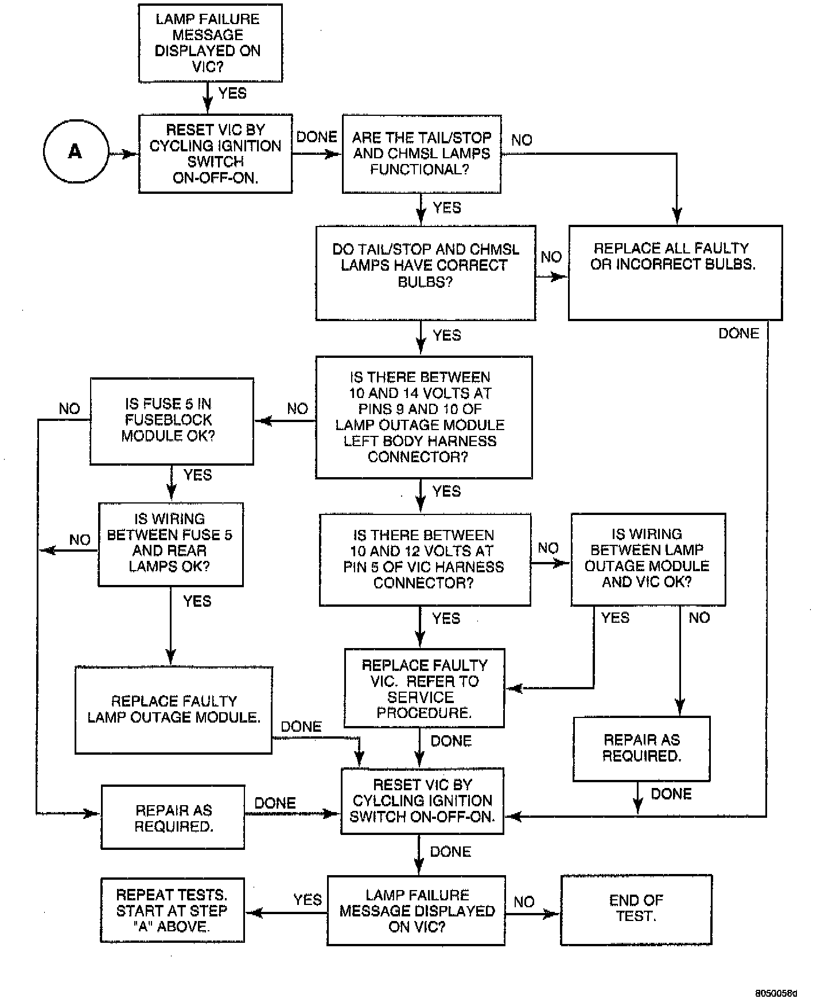

Lamp Control Module: Testing and Inspection
Lamp Outage Module Diagnosis:

NOTE: The Lamp Outage Module contains an internal circuit breaker. When the module senses an overload it will trip the circuit breaker and illuminate a failure in the Vehicle Information Center (VIC). The circuit breaker will reset once the vehicle is turned off for approximately 60 seconds. Continuous tripping of the circuit breaker may indicate a circuit problem.